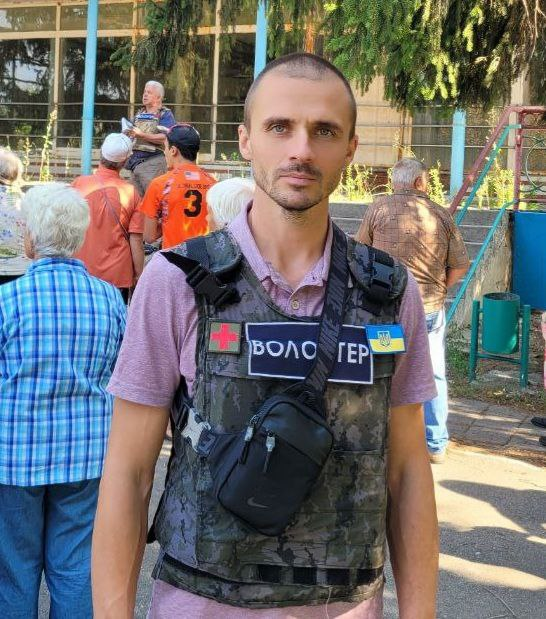

Общество и природа
Люди и окружающая среда связаны между собой, так как человек является частью природы. Взаимодействие общества и природы началось с момента появления людей. Земля используется для выращивания сельскохозяйственных растений, обеспечения питания. Добыча полезных ископаемых также связана с жизнедеятельностью людей.
Что такое общество?
- Люди
- Ценности:
- Деньги
- Духовное
- Другое
- Правила
Признаки общества
Исходя из функций, разделены и общественные сферы: связанная с управлением представляет собой политику; направленная на производство — экономику; на понимание моральных норм, культуры — духовную сферу; семья — социум.
Исходя из функций, разделены и общественные сферы: связанная с управлением представляет собой политику; направленная на производство — экономику; на понимание моральных норм, культуры — духовную сферу; семья — социум.
Наше желание
- Стабильность
- Успех
- Уверенность
- Цель
Защита природы волонтерами
Люди нарушают целостность и гармонию в природе (чаще осознанно), уничтожая редкие виды животных, растений. В целом общество наносит существенный вред экологии. В природе происходит дисбаланс, что сказывается на качестве жизни общества. Связи общества и природы могут проявляться через географический фатализм. Людьми преувеличивается роль климата, рельефа, почв и других особенностей территории их проживания. Промышленное, экономическое, техническое, социальное развитие общества отходит на второй план. Главный образовательный портал